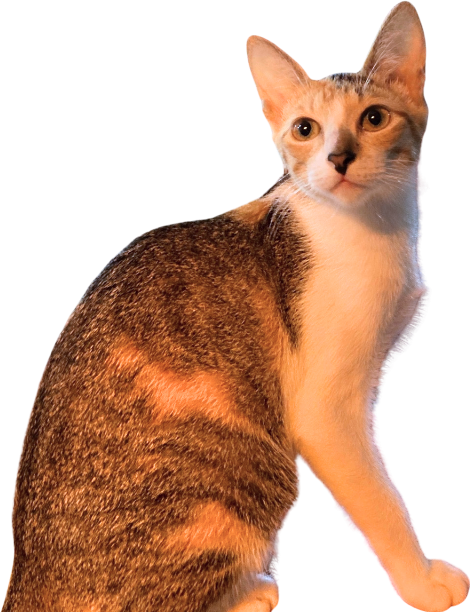
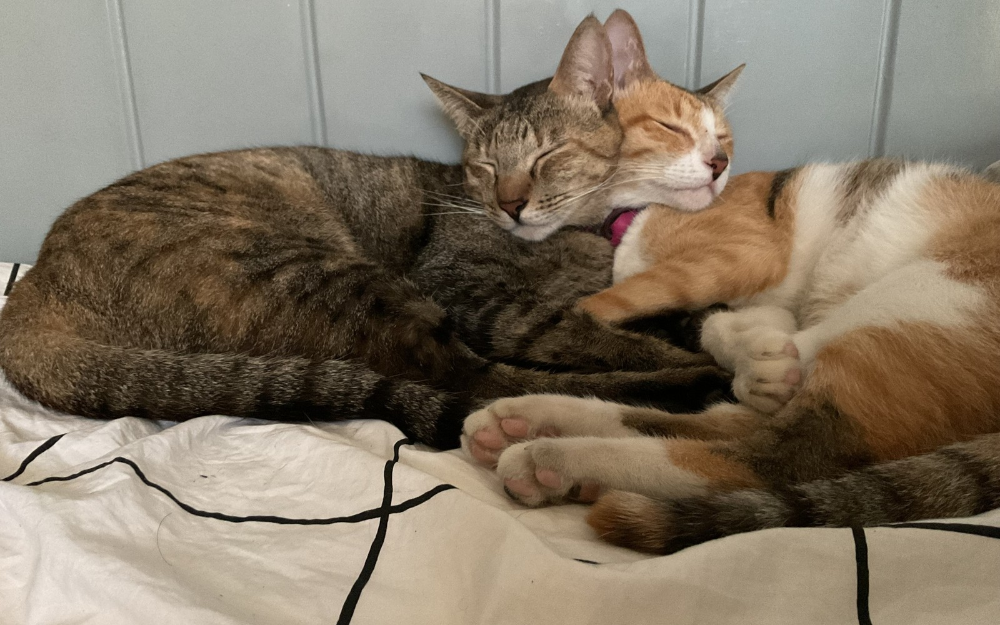
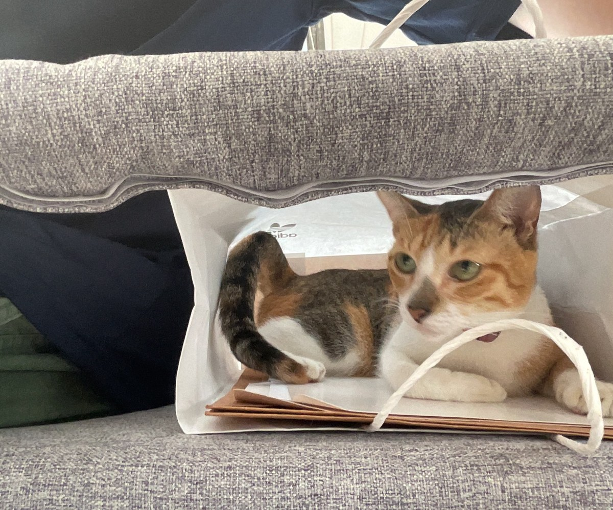
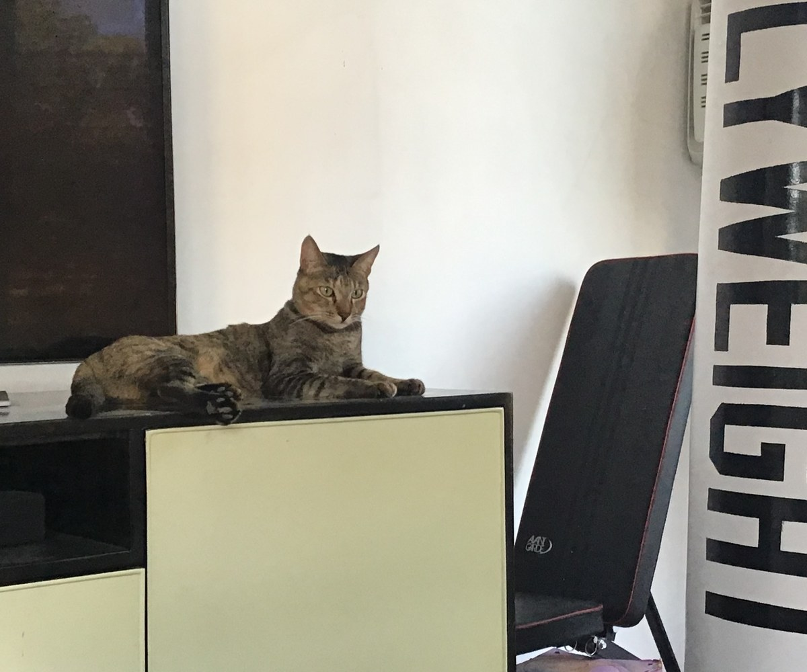

Harvard University · Physics + Economics
I work across quantum computing, crypto agility, quantum spin lakes, scientific machine learning, and institution building
I’m Joaquin—a researcher and builder interested in difficult scientific problems, adaptable technology, and the institutions that help ambitious ideas become real.
- Research
- Quantum information · Scientific ML
- Building
- Resilient systems · Technical communities
- Based
- Cambridge, MA · Pasadena, CA

Now & previously
A working history.
Research, technical building, and institutions—kept intentionally concise here. The detailed methods and visual explanations live in the Research Atlas.
Now
-
Quantum Machine Learning Researcher
Caltech · SURF
Exploring quantum variational rewinding for anomaly detection in active galactic nuclei.
-
Post-Quantum Security Intern
QuSecure
Working across post-quantum cryptography, crypto agility, and resilient infrastructure.
-
Undergraduate Researcher
Center for Astrophysics | Harvard & Smithsonian
Building machine-learning systems for rare transient discovery in large astronomical surveys.
-
Co-President
Harvard Undergraduate Quantum Computing Association
Expanding access to quantum research through mentorship, technical programming, and partnerships.
-
Founder & Executive Director
NOVUS Innovations
Creating pathways for students across the Philippines to turn STEM ideas into real-world solutions.
Previously
-
Intern
Philippine Space Agency
Supported stakeholder networks and satellite-data applications for sustainability.
-
Independent & Academic Research
Quantum information · Computational science
Worked on blind quantum computing, random-circuit simulation, and the Philippine research network.
-
Software Engineering Intern
Dashlabs.ai / Dashboard Philippines
Built geospatial and database tooling supporting public information during COVID-19.
Harvard University · A.B. candidate in Physics and Economics · Class of 2028 · 4.0 GPA · John Harvard Scholar
Full résuméCurrent directions
The questions I keep returning to.
Quantum computation
How can quantum models reveal structure that classical representations miss?
Crypto agility
How do we build critical systems that can change their cryptography without breaking?
Scientific machine learning
What representation makes a rare signal visible inside noisy, irregular data?
Quantum matter
Can driven dynamics create useful order beyond what equilibrium phases allow?
The home team
Ivy & Lady
A small personal corner for the two constants behind the research, applications, late nights, and everything in between.




About
Technical depth, translated into action.
I am a Harvard undergraduate studying Physics and Economics, with interests spanning quantum information, scientific machine learning, cryptographic resilience, and technology strategy.
I am drawn to people and projects that are rigorous without being narrow—work that advances the frontier, creates leverage, and builds pathways for others to participate.
Collaborate